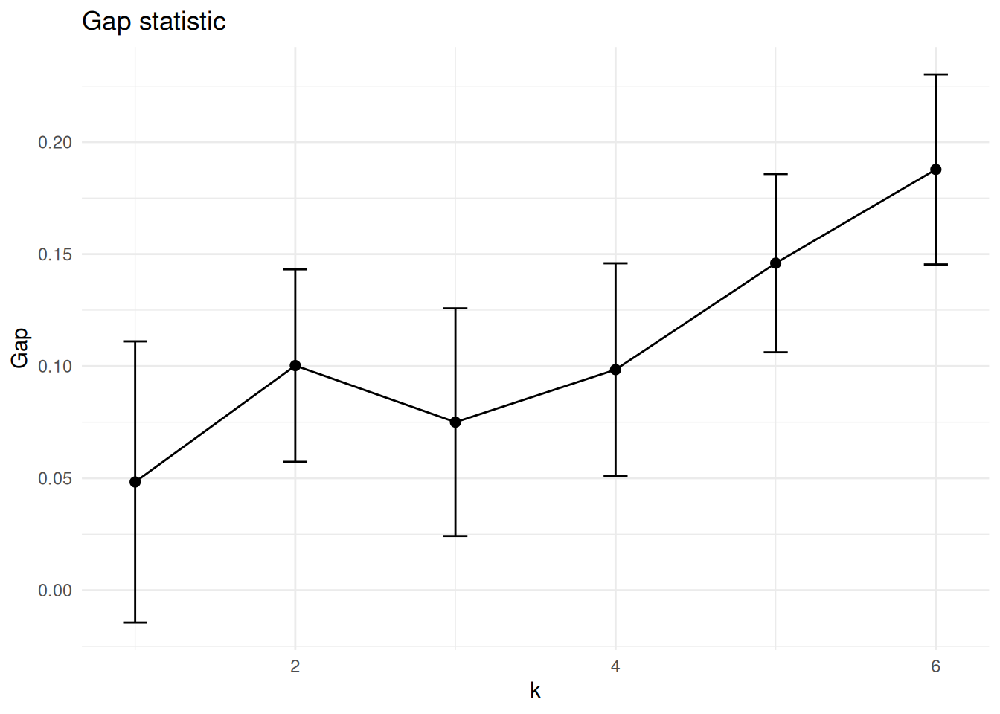
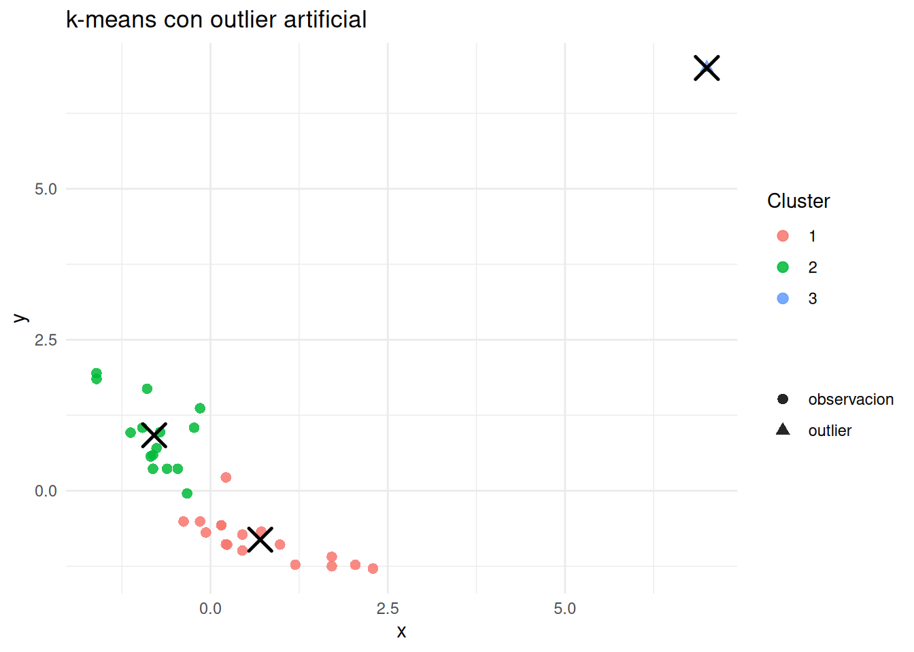
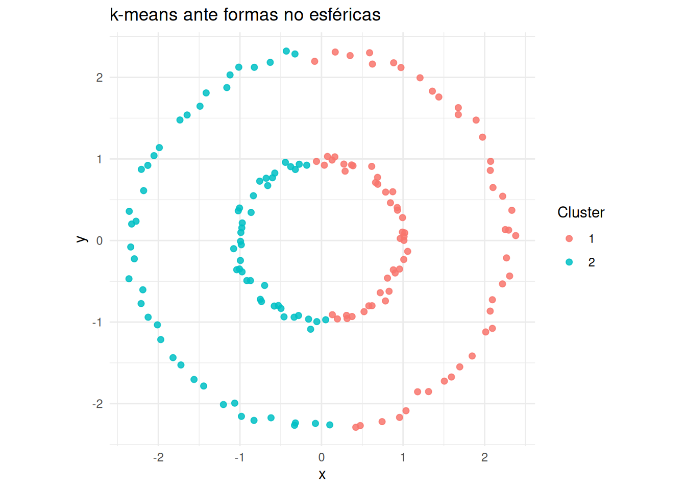
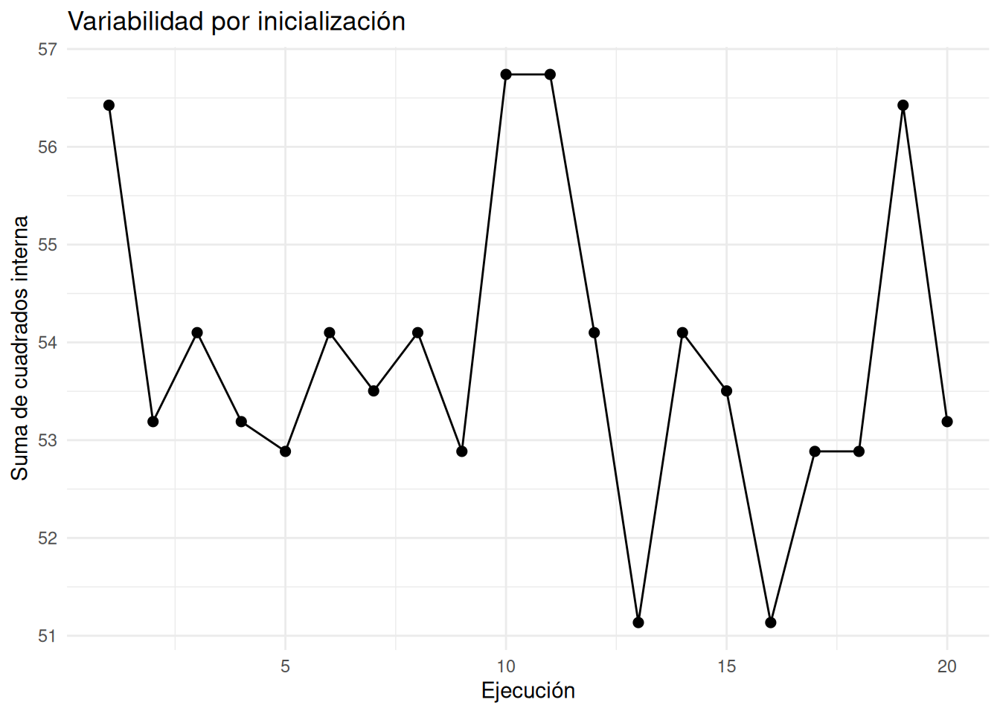

Código
library(tidyverse)
library(knitr)library(tidyverse)
library(knitr)En lugar de construir una jerarquía completa, a veces queremos una partición directa en \(k\) grupos. k-means y PAM son dos métodos clásicos para ese objetivo.
La diferencia principal es qué representa a cada grupo. k-means usa centroides, que son medias y no tienen por qué corresponder a observaciones reales. PAM usa medoides, que son individuos reales del dataset.
k-means busca grupos compactos alrededor de centroides; si esa geometría no representa bien los datos, el resultado puede ser técnicamente correcto pero sustantivamente débil.
Una partición asigna cada individuo a un único grupo. Si tenemos \(n\) individuos y queremos \(K\) clusters, buscamos conjuntos \(C_1,\ldots,C_K\) tales que:
La partición no tiene niveles intermedios como un dendrograma. Por eso hay que fijar o seleccionar \(K\).
k-means busca \(K\) centroides \(\mu_1,\ldots,\mu_K\) y una asignación de individuos a clusters que minimice la suma de cuadrados dentro de los grupos:
\[ W_K=\sum_{g=1}^{K}\sum_{i \in C_g}\lVert x_i-\mu_g\rVert^2. \]
Para una partición fija, el mejor centroide de cada cluster es su media:
\[ \mu_g=\frac{1}{|C_g|}\sum_{i \in C_g}x_i. \]
La función objetivo penaliza distancias euclídeas al cuadrado. Por eso k-means está muy ligado a variables numéricas, escalado y clusters aproximadamente esféricos.
El algoritmo más habitual de k-means alterna dos pasos:
\[ c_i=\arg\min_{g=1,\ldots,K}\lVert x_i-\mu_g\rVert^2. \]
\[ \mu_g^{nuevo}=\frac{1}{|C_g|}\sum_{i:c_i=g}x_i. \]
Estos pasos se repiten hasta que las asignaciones no cambian o hasta alcanzar un número máximo de iteraciones. En cada iteración, la suma de cuadrados interna no aumenta. El algoritmo converge, pero puede converger a un óptimo local.
Como k-means puede terminar en soluciones distintas según los centros iniciales, conviene usar varias inicializaciones. En R, nstart = 25 ejecuta el algoritmo desde 25 inicios y conserva la mejor solución según la función objetivo.
set.seed(123)
vars_mtcars <- mtcars[, c("mpg", "disp", "hp", "wt", "qsec")]
X <- scale(vars_mtcars)
km3 <- kmeans(X, centers = 3, nstart = 25)
kable(table(km3$cluster), col.names = c("Cluster", "Frecuencia"))| Cluster | Frecuencia |
|---|---|
| 1 | 6 |
| 2 | 14 |
| 3 | 12 |
tibble(tot_withinss = km3$tot.withinss) |>
kable()| tot_withinss |
|---|
| 51.1346 |
Para entender el algoritmo, usamos dos variables de mtcars y tres centros iniciales. El siguiente código calcula asignación y actualización una vez.
set.seed(42)
X2 <- scale(mtcars[, c("mpg", "wt")])
centros <- X2[sample(seq_len(nrow(X2)), 3), ]
dist_a_centros <- sapply(seq_len(3), function(g) rowSums((X2 - matrix(centros[g, ], nrow(X2), 2, byrow = TRUE))^2))
asignacion <- max.col(-dist_a_centros)
centros_nuevos <- do.call(rbind, lapply(1:3, function(g) colMeans(X2[asignacion == g, , drop = FALSE])))
round(centros, 2) mpg wt
Chrysler Imperial -0.89 2.17
Hornet Sportabout -0.23 0.23
Mazda RX4 0.15 -0.61kable(round(centros, 2), caption = "Centros iniciales")| mpg | wt | |
|---|---|---|
| Chrysler Imperial | -0.89 | 2.17 |
| Hornet Sportabout | -0.23 | 0.23 |
| Mazda RX4 | 0.15 | -0.61 |
kable(round(centros_nuevos, 2), caption = "Centros tras una actualización")| mpg | wt |
|---|---|
| -1.37 | 2.17 |
| -0.54 | 0.36 |
| 0.87 | -0.85 |
Los centros se mueven hacia la media de los puntos que han atraído. Repetir este proceso reduce la suma de cuadrados interna.
El siguiente bloque genera un pequeño control deslizante para ver varias iteraciones de k-means sobre dos variables de mtcars. No usa paquetes externos; solo HTML y JavaScript en la salida HTML de Quarto.
X_demo <- scale(mtcars[, c("mpg", "wt")])
K <- 3
set.seed(1)
centros <- X_demo[sample(seq_len(nrow(X_demo)), K), , drop = FALSE]
historial <- list()
for (iter in 1:8) {
distancias <- sapply(seq_len(K), function(g) {
rowSums((X_demo - matrix(centros[g, ], nrow(X_demo), 2, byrow = TRUE))^2)
})
cl <- max.col(-distancias)
historial[[iter]] <- list(iter = iter, puntos = X_demo, centros = centros, cluster = cl)
nuevos <- do.call(rbind, lapply(seq_len(K), function(g) colMeans(X_demo[cl == g, , drop = FALSE])))
if (max(abs(nuevos - centros)) < 1e-8) {
centros <- nuevos
break
}
centros <- nuevos
}
xlim <- range(X_demo[, 1], centros[, 1])
ylim <- range(X_demo[, 2], centros[, 2])
esc <- function(z, lim, a, b) a + (z - lim[1]) / diff(lim) * (b - a)
slides <- vapply(historial, function(h) {
pts <- paste(sprintf(
"{x:%.2f,y:%.2f,c:%d}",
esc(h$puntos[, 1], xlim, 30, 470),
esc(h$puntos[, 2], ylim, 270, 30),
h$cluster
), collapse = ",")
ctr <- paste(sprintf(
"{x:%.2f,y:%.2f,c:%d}",
esc(h$centros[, 1], xlim, 30, 470),
esc(h$centros[, 2], ylim, 270, 30),
seq_len(K)
), collapse = ",")
sprintf("{label:'Iteracion %d', points:[%s], centers:[%s]}", h$iter, pts, ctr)
}, character(1))
cat(sprintf("
<div id='km-demo' style='max-width:620px;margin:1rem auto;'>
<label for='km-slider'><strong>Iteracion:</strong> <span id='km-label'>1</span></label>
<input id='km-slider' type='range' min='1' max='%d' value='1' step='1' style='width:100%%;'>
<svg id='km-svg' viewBox='0 0 500 300' style='width:100%%;border:1px solid #ddd;background:#fff;'></svg>
</div>
<script>
(function() {
const slides = [%s];
const colors = ['#1b9e77', '#d95f02', '#7570b3', '#e7298a'];
const svg = document.getElementById('km-svg');
const slider = document.getElementById('km-slider');
const label = document.getElementById('km-label');
function render(i) {
const s = slides[i];
label.textContent = s.label;
let html = '<line x1=\"30\" y1=\"270\" x2=\"470\" y2=\"270\" stroke=\"#aaa\" />' +
'<line x1=\"30\" y1=\"30\" x2=\"30\" y2=\"270\" stroke=\"#aaa\" />';
s.points.forEach(p => {
html += `<circle cx=\"${p.x}\" cy=\"${p.y}\" r=\"4\" fill=\"${colors[p.c - 1]}\" opacity=\"0.75\"></circle>`;
});
s.centers.forEach(p => {
html += `<path d=\"M ${p.x-8} ${p.y} L ${p.x+8} ${p.y} M ${p.x} ${p.y-8} L ${p.x} ${p.y+8}\" stroke=\"${colors[p.c - 1]}\" stroke-width=\"4\"></path>`;
html += `<circle cx=\"${p.x}\" cy=\"${p.y}\" r=\"9\" fill=\"none\" stroke=\"black\" stroke-width=\"1.5\"></circle>`;
});
svg.innerHTML = html;
}
slider.addEventListener('input', function() { render(Number(this.value) - 1); });
render(0);
})();
</script>
", length(historial), paste(slides, collapse = ",")))
En cada paso, los puntos se colorean según su centroide más cercano y las cruces muestran los centroides antes de la actualización siguiente. La idea visual importante es que los centroides se desplazan hacia el centro de masa de los puntos que capturan.
En mtcars tenemos variables que no tienen por qué entrar como activas. La transmisión (am) o el número de cilindros (cyl) pueden servir como comparación externa.
kable(table(cluster = km3$cluster, transmision = factor(mtcars$am, labels = c("automatico", "manual"))))| automatico | manual |
|---|---|
| 0 | 6 |
| 12 | 2 |
| 7 | 5 |
kable(table(cluster = km3$cluster, cilindros = mtcars$cyl))| 4 | 6 | 8 |
|---|---|---|
| 6 | 0 | 0 |
| 0 | 0 | 14 |
| 5 | 7 | 0 |
Una coincidencia alta no convierte el clustering en supervisado; simplemente indica que la estructura encontrada se alinea con una etiqueta conocida.
El método del codo inspecciona cómo disminuye la variabilidad interna al aumentar \(K\):
\[ W_K=\sum_{g=1}^{K}\sum_{i \in C_g}\lVert x_i-\mu_g\rVert^2. \]
Como \(W_K\) siempre disminuye al aumentar \(K\), buscamos un punto donde la mejora adicional empieza a ser pequeña.
set.seed(123)
wss <- sapply(1:8, function(k) kmeans(X, centers = k, nstart = 25)$tot.withinss)
tibble(k = 1:8, wss = wss) |>
ggplot(aes(k, wss)) +
geom_line() +
geom_point(size = 2) +
labs(title = "Método del codo", x = "Número de clusters", y = "Suma de cuadrados interna") +
theme_minimal()
El codo rara vez es completamente objetivo. Sirve como guía visual.
La silhouette, desarrollada en Sección 5.14.1 para comparar cortes de un árbol, también puede evaluar particiones producidas por k-means, PAM u otros algoritmos. En ese caso se sustituyen las asignaciones de cutree() por las de cada partición candidata, manteniendo una distancia coherente con la geometría del método.
El gap statistic compara la variabilidad interna observada con la esperada bajo una distribución de referencia sin estructura clara:
\[ Gap(K)=E^*[\log(W_K^*)]-\log(W_K). \]
Si el gap es grande, los clusters observados son más compactos de lo esperable bajo una nube sin estructura. En la práctica, se combina con interpretabilidad y estabilidad.
set.seed(123)
gap <- cluster::clusGap(X, FUN = kmeans, K.max = 6, B = 20, nstart = 10)
as_tibble(gap$Tab, rownames = "k") |>
mutate(k = as.integer(k)) |>
ggplot(aes(k, gap)) +
geom_line() +
geom_point(size = 2) +
geom_errorbar(aes(ymin = gap - SE.sim, ymax = gap + SE.sim), width = 0.15) +
labs(title = "Gap statistic", x = "k", y = "Gap") +
theme_minimal()
k-means es sensible al escalado, outliers, variables irrelevantes y clusters no esféricos. También presupone que el promedio representa bien cada grupo.
set.seed(123)
km_sin_escalar <- kmeans(vars_mtcars, centers = 3, nstart = 25)
kable(table(escalado = km3$cluster, sin_escalar = km_sin_escalar$cluster))| 1 | 2 | 3 |
|---|---|---|
| 0 | 0 | 6 |
| 5 | 9 | 0 |
| 2 | 0 | 10 |
Un outlier puede arrastrar un centroide o incluso ocupar casi un cluster.
set.seed(123)
X_out <- rbind(X[, 1:2], outlier = c(7, 7))
km_out <- kmeans(X_out, centers = 3, nstart = 25)
as_tibble(X_out, .name_repair = "minimal") |>
set_names(c("x", "y")) |>
mutate(cluster = factor(km_out$cluster), tipo = if_else(row_number() == n(), "outlier", "observacion")) |>
ggplot(aes(x, y, color = cluster, shape = tipo)) +
geom_point(size = 2.4, alpha = 0.85) +
geom_point(
data = as_tibble(km_out$centers, .name_repair = "minimal") |> set_names(c("x", "y")),
aes(x, y),
inherit.aes = FALSE,
shape = 4,
size = 5,
stroke = 1.3
) +
labs(title = "k-means con outlier artificial", color = "Cluster", shape = "") +
theme_minimal()
k-means separa el espacio mediante regiones de Voronoi alrededor de centroides. Las fronteras son lineales y los clusters esperados son compactos.
set.seed(99)
t <- seq(0, 2 * pi, length.out = 80)
anillo1 <- cbind(cos(t), sin(t)) + matrix(rnorm(160, sd = 0.05), ncol = 2)
anillo2 <- 2.3 * cbind(cos(t), sin(t)) + matrix(rnorm(160, sd = 0.05), ncol = 2)
anillos <- rbind(anillo1, anillo2)
km_anillos <- kmeans(anillos, centers = 2, nstart = 25)
tibble(x = anillos[, 1], y = anillos[, 2], cluster = factor(km_anillos$cluster)) |>
ggplot(aes(x, y, color = cluster)) +
geom_point(size = 1.8, alpha = 0.85) +
coord_equal() +
labs(title = "k-means ante formas no esféricas", color = "Cluster") +
theme_minimal()
Aunque hay dos anillos naturales, k-means tiende a cortar por regiones convexas, no por forma anular.
No es buena elección si:
k-medoids reemplaza centroides por medoides. Un medoide \(m_g\) es una observación real dentro del cluster \(C_g\). La función objetivo típica es:
\[ \sum_{g=1}^{K}\sum_{i \in C_g} d(x_i,m_g). \]
La asignación se hace al medoide más cercano. Luego se buscan medoides que reduzcan la suma de disimilitudes dentro de cada cluster.
Ventajas frente a k-means:
Desventajas:
PAM es un algoritmo clásico de k-medoids. Tiene dos fases:
La idea del paso SWAP es comparar el coste actual con el coste que se obtendría si un medoide \(m\) se reemplazara por una observación \(h\). Si la suma total de distancias al medoide más cercano disminuye, el intercambio mejora la partición.
pam3 <- cluster::pam(X, k = 3)
kable(table(pam = pam3$clustering, transmision = factor(mtcars$am, labels = c("automatico", "manual"))))| automatico | manual |
|---|---|
| 7 | 6 |
| 12 | 2 |
| 0 | 5 |
kable(as.data.frame(pam3$medoids), caption = "Medoides")| mpg | disp | hp | wt | qsec | |
|---|---|---|---|---|---|
| Volvo 142E | 0.2172534 | -0.8852915 | -0.5496780 | -0.4468769 | 0.4204107 |
| Merc 450SE | -0.6123539 | 0.3637131 | 0.4858679 | 0.8715249 | -0.2511272 |
| Honda Civic | 1.7105465 | -1.2507948 | -1.3810318 | -1.6375265 | 0.3756415 |
Una ventaja importante de PAM es que puede usar una matriz de disimilitudes. Por ejemplo, con mtcars_mixed podemos combinar variables numéricas y categóricas mediante Gower.
mtcars_mixed <- mtcars
mtcars_mixed$cyl <- factor(mtcars_mixed$cyl)
mtcars_mixed$vs <- factor(mtcars_mixed$vs, labels = c("V", "Straight"))
mtcars_mixed$am <- factor(mtcars_mixed$am, labels = c("automatico", "manual"))
mtcars_mixed$gear <- factor(mtcars_mixed$gear)
mtcars_mixed$carb <- factor(mtcars_mixed$carb)
d_gower <- cluster::daisy(mtcars_mixed, metric = "gower")
pam_cars <- cluster::pam(d_gower, k = 3, diss = TRUE)
kable(table(pam_cars$clustering), col.names = c("Cluster", "Frecuencia"))| Cluster | Frecuencia |
|---|---|
| 1 | 6 |
| 2 | 11 |
| 3 | 15 |
tibble(medoide = rownames(mtcars_mixed)[pam_cars$id.med]) |>
kable()| medoide |
|---|
| Mazda RX4 Wag |
| Fiat X1-9 |
| AMC Javelin |
| Aspecto | k-means | PAM / k-medoids |
|---|---|---|
| Representante | Centroide, media no necesariamente observada | Medoide, observación real |
| Distancia natural | Euclídea al cuadrado | Cualquier disimilitud |
| Tipo de variables | Numéricas | Numéricas, categóricas o mixtas si hay distancia adecuada |
| Robustez ante outliers | Menor | Mayor |
| Coste computacional | Menor | Mayor |
| Interpretabilidad del representante | Media abstracta | Caso real representativo |
Después de obtener clusters, hay que describirlos.
aggregate(vars_mtcars, by = list(cluster = km3$cluster), mean) |>
kable(digits = 2)| cluster | mpg | disp | hp | wt | qsec |
|---|---|---|---|---|---|
| 1 | 30.07 | 86.65 | 75.50 | 1.87 | 18.40 |
| 2 | 15.10 | 353.10 | 209.21 | 4.00 | 16.77 |
| 3 | 20.92 | 159.98 | 109.33 | 2.98 | 18.83 |
También conviene revisar tamaños y dispersión interna:
data.frame(
cluster = seq_along(km3$size),
tamano = km3$size,
withinss = round(km3$withinss, 2)
) |>
kable()| cluster | tamano | withinss |
|---|---|---|
| 1 | 6 | 5.02 |
| 2 | 14 | 27.07 |
| 3 | 12 | 19.04 |
Un cluster grande y heterogéneo puede indicar que \(K\) es demasiado pequeño o que la geometría de k-means no encaja bien.
Una partición útil no debería depender excesivamente de una semilla concreta. Podemos repetir el algoritmo con varias semillas y mirar la variabilidad de la función objetivo.
set.seed(1)
totales <- replicate(20, kmeans(X, centers = 3, nstart = 1)$tot.withinss)
tibble(
minimo = min(totales),
mediana = median(totales),
media = mean(totales),
maximo = max(totales)
) |>
kable(digits = 2)| minimo | mediana | media | maximo |
|---|---|---|---|
| 51.13 | 53.5 | 53.86 | 56.74 |
tibble(ejecucion = seq_along(totales), tot_withinss = totales) |>
ggplot(aes(ejecucion, tot_withinss)) +
geom_line() +
geom_point(size = 2) +
labs(title = "Variabilidad por inicialización", x = "Ejecución", y = "Suma de cuadrados interna") +
theme_minimal()
Si hay mucha variabilidad, conviene aumentar nstart, revisar datos o plantear otro método.
nstart y depender de una inicialización débil.k-means y PAM construyen particiones directas. k-means alterna asignación a centroides y actualización por medias, minimizando suma de cuadrados interna. PAM busca medoides reales y puede trabajar con disimilitudes generales. Ambos necesitan elegir \(K\), revisar estabilidad y caracterizar los clusters después de calcularlos.
mtcars con \(K=3\) y \(K=4\).mtcars.mtcars_mixed.